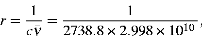

Next: Initial dynamics of N2 with N-N distance = 1.094
Up: The nitrogen molecule
Previous: The nitrogen molecule
The period of vibration (time taken for the oscillator to undertake one
complete vibration, returning to its original position and velocity) can be
calculated in three ways. Most direct is the calculation from the energy
curve; using the gradient constitutes a faster, albeit less direct, method,
while calculating it from the vibrational frequency is very fast but
assumes that the vibrational spectrum has already been calculated.
- 1.
- From the energy curve. For a simple harmonic oscillator the period r is
given by:
where k is the force
constant. The reduced mass, m,
(in amu) of a nitrogen molecule is
14.0067/2 = 7.00335,
and the force-constant, k, can be calculated from:
E-c = (1/2) k(R-Ro)2.
Given
Ro = 1.1038, R = 1.092,
c = 8.25741 and
E = 8.57496 kcal/mol
then:
k = 2x0.31755/(0.0118)
2 (per mole)
k = 4561.2 kcal/mol/A
2 (per mole)
k = 1.9084x10
30 ergs/cm
2 (per mole)
k = 31.69x10
5 dynes/cm (per molecule)
(Experimentally, for N
2,
k = 23x10
5 dynes/cm )
Therefore:
If the frequency is calculated using the other half of the curve (
R=1.118,
E=8.69441), then k=12.333 fs, or k, average, = 12.185 fs.
- 2.
- From the gradient curve. The force constant is the derivative of
the gradient wrt distance:
Since we are using discrete points, the force constant is best
obtained from finite differences:
For
x2 = 1.1100,
G2 = 27.098 and for
x1 = 1.0980,
G1 = -26.311,
giving rise to
k = 4450.75 kcal/mol/Å2 and a period of 12.185 fs.
- 3.
- From the vibrational frequency. Given a "frequency" (wavenumber) of
vibration of N2 of n =
2738.8
cm-1, the period of
oscillation, in seconds, is given directly by:

or as 12.179 fs.
Summarizing, by three different methods the period of oscillation of N2
is calculated to be 12.1851, 12.185 and 12.179 fs, average 12.183 fs.
Next: Initial dynamics of N2
Up: The nitrogen molecule
Previous: The nitrogen molecule
J. J. P. Stewart
Fujitsu Ltd. 2001